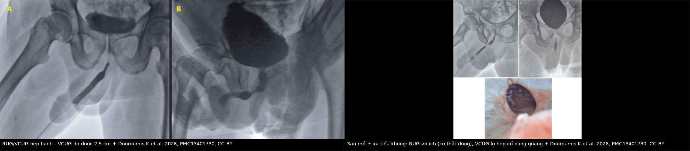
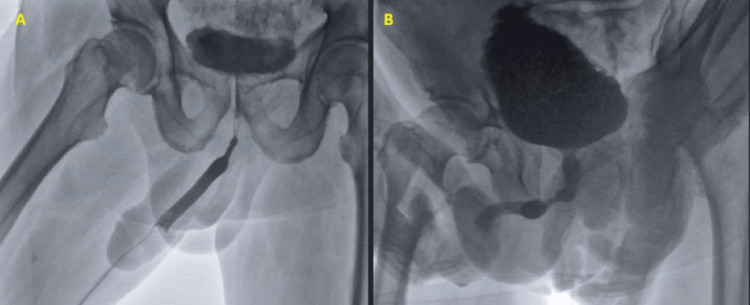
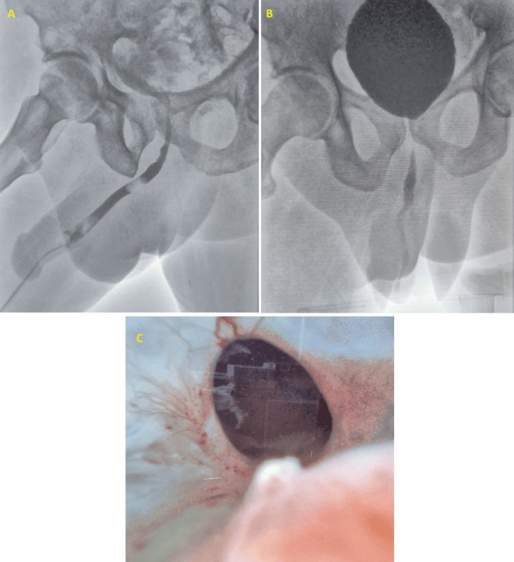
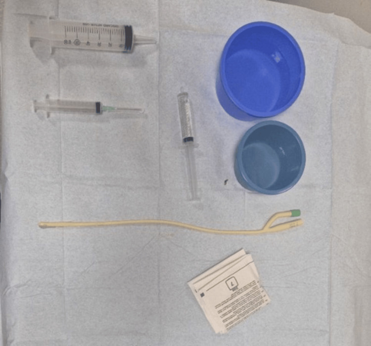

3134 — Hẹp niệu đạo sau xạ trị tiền liệt tuyến / Radiation-induced urethral stricture
Tags: pattern:hep-nieu-dao pattern:hep-dai-doan pattern:viem-sau-xa pattern:bi-tieu vung:nieu-dao vung:tieu-khung vung:bang-quang score:AUA-SS protocol:RUG protocol:VCUG protocol:niệu-nội-soi protocol:MRI-chau protocol:nong-bong incidentaloma:khong
Mức chắc chắn (certainty): tổng hợp y văn (literature synthesis) — số liệu từ bài tổng quan cơ chế–điều trị (PMC10299043, J Clin Med 2023), khảo sát hình ảnh RUG/VCUG có ca minh hoạ (PMC13401730, Cureus 2026, CC BY), loạt ca Optilume sau điều trị ung thư tiền liệt tuyến (PMC12541494), ca tái tạo niệu đạo đã xạ 6 cm (PMC13742844) và đoàn hệ 67.527 bệnh nhân được trích trong PMC10299043. Chỗ suy luận được đánh dấu [suy luận].
Câu chốt: hẹp sau xạ không phải "hẹp niệu đạo thông thường". Ba khác biệt quyết định xử trí: (1) đoạn hẹp dài, đều, không có vùng chuyển tiếp rõ (xơ lan theo trường chiếu) chứ không khu trú như hẹp sau đặt sonde/DVIU; (2) mô thiếu mạch nuôi nên nong bóng lặp lại thất bại và có thể làm hẹp thêm; (3) hẹp có thể nằm sau cơ thắt ngoài/cổ bàng quang — chỗ RUG ngược dòng không tới được, nên chỉ chụp RUG là bỏ sót (Hình 6 của PMC13401730).
1. Tổng quan bệnh học – cơ chế hình ảnh
- Bệnh học (pathology): xạ trị gây viêm tắc động mạch tận (endarteritis obliterans) của đám rối mạch quanh niệu đạo + xơ hóa thể hang xốp (corpus spongiosum). Hệ quả: niệu đạo mất tính đàn hồi, thành dày, lòng hẹp theo chu vi trên một đoạn dài, và mô lành kém vì thiếu tưới máu (PMC10299043).
- TẠI SAO hẹp sau xạ "dài và đều": trường chiếu là khối hình học, không phải điểm — tổn thương mạch/xơ phân bố suốt vùng chiếu, nên khi lành tạo ống hẹp thuôn dần hai đầu (tapered) chứ không phải vòng xơ khu trú. Đây là lý do trên phim RUG hẹp sau xạ hiện cột thuốc mảnh, dài, bờ không đều, không có "vai" rõ — khác hẹp sau chấn thương (đứt rời, khoảng cách) hay hẹp sau DVIU (ngắn, ở hành).
- TẠI SAO mô đã xạ khó lành — số liệu mô học: thể hang xốp bình thường có 75% collagen type I / 25% type III; ở niệu đạo hẹp tỷ lệ đảo thành 16% type I / 84% type III — collagen type III nhiều làm mô kém bền, co rút; kèm acid hyaluronic thấp hơn 50% và dermatan sulfate cao hơn 68% trong chất nền ngoại bào (PMC10299043). [suy luận] Đây là cơ sở sinh học cho việc ghép niêm mạc miệng (buccal mucosal graft) thay vì nối tận–tận: cần mang mô lành có mạch vào vùng xơ.
- Tần suất — dùng để quyết định có tầm soát hay không: CaPSURE 1,8% sau brachytherapy (BT), 1,7% sau xạ ngoài (EBRT), 5,2% khi EBRT + BT; BT liều cao có thể tới 32%; EBRT đơn thuần 1,1–4,5%; phân tích gộp > 16.000 ca cho tỷ lệ 3,9%, tiền lưu hành gộp 2,2% ở năm thứ 4, và 4,9% khi phối hợp EBRT + BT (PMC10299043).
- Đoàn hệ 67.527 bệnh nhân ung thư tiền liệt tuyến: 8,44% có hẹp niệu đạo trong 5 năm sau xạ trị, so với 5,35% sau cắt tuyến tiền liệt; 11,22% sau xạ cứu vớt (salvage RT) và 19,34% sau mổ cứu vớt (PMC10299043).
- Vị trí và thời điểm: 90–100% hẹp sau BT nằm ở niệu đạo hành–màng, xuất hiện trung vị 2,2–2,4 năm sau kết thúc xạ (PMC10299043). [suy luận] Vì vậy bệnh nhân tiểu khó 1–3 năm sau xạ phải được coi là hẹp cho tới khi chứng minh ngược lại — không quy cho "di chứng xạ chung".
- Hình ảnh học phản ánh mô học: trên MRI, vùng xơ sau xạ giảm tín hiệu trên T2 và mất cấu trúc thể hang xốp bình thường (mô sáng T2 bị thay bằng dải tối), ngấm thuốc không đều; trên siêu âm, thành niệu đạo dày, lòng hẹp, không thấy sỏi/vôi hóa (khác hẹp do lichen sclerosus có vôi hóa quanh niệu đạo đôi khi gặp).
2. Mẫu hình + chẩn đoán phân biệt theo vị trí (gamut)
- Hành–màng (bulbomembranous) — hay gặp nhất sau BT/EBRT: hẹp dài 2–6 cm, thuôn hai đầu; bệnh nhân yếu tia, tiểu ngắt quãng, nhiễm trùng tiết niệu tái diễn, có khi bí tiểu cấp. Gamut: hẹp sau xạ, hẹp sau DVIU tái phát, hẹp sau chấn thương yên ngựa (straddle), hẹp do lichen sclerosus lan ngược, ung thư biểu mô niệu đạo.
- Cổ bàng quang / miệng nối niệu đạo–bàng quang (sau cắt tuyến tiền liệt + xạ): hẹp rất ngắn nhưng ở sau cơ thắt ngoài → RUG ngược dòng không thấy, VCUG mới lộ. Gamut: hẹp cổ bàng quang, co thắt cổ bàng quang do thuốc/ thần kinh, tái phát u tại miệng nối, sỏi bàng quang.
- Trong tuyến tiền liệt (intraprostatic) sau điều trị đốt u (TULSA, IRE, HIFU, laser): hẹp ngắn, sát sàn bàng quang; Loạt 4 ca sau TULSA/IRE được nong bóng phủ paclitaxel, không tái phát tới 14 tháng (PMC12541494).
- Toàn bộ niệu đạo trước (pan-anterior) sau xạ toàn vùng: hẹp > 6 cm, gần tắc hoàn toàn; ca báo 42 tuổi sau xạ ung thư biểu mô niệu đạo có hẹp 6 cm gần tắc hoàn toàn niệu đạo hành + màng, được tái tạo một thì bằng ghép niêm mạc miệng hai mặt, AUA-SS 25 → 3 ở 3 năm (PMC13742844).
- Mnemonic "RADIATE": Radiotherapy tiền sử, Acuminate (thuôn dần, không vai), Dài đoạn, Ischaemia (mô thiếu mạch), Anastomotic/bladder neck cũng có thể, Timing 2 năm, Endoscopy kém bền.
3. Bảng so sánh phân biệt (ma trận đối chiếu)
| Thực thể (entity) | Hình ảnh điển hình (RUG / VCUG / MRI) | Chốt vào (rule-in) | Chốt loại (rule-out) | Gợi ý xác nhận |
|---|---|---|---|---|
| Hẹp sau xạ (hành–màng) | RUG: cột thuốc mảnh, dài 2–6 cm, thuôn hai đầu, bờ không đều; VCUG: thấy đoạn trên chỗ hẹp; MRI: dải xơ T2 tối, mất cấu trúc thể hang xốp | Tiền sử xạ + hẹp dài > 2 cm + trung vị 2,2–2,4 năm | Hẹp < 1 cm, bờ rõ như vòng → hẹp sau DVIU/sonde; khoảng cách đứt rời → chấn thương khung chậu | RUG + VCUG cùng lúc, đo chiều dài, MRI chậu khi định mổ |
| Hẹp sau DVIU/sonde tái phát | Hẹp ngắn (< 1–2 cm), thường hành, bờ rõ, tái phát sau mỗi lần nong | Tiền sử thủ thuật nội soi + hẹp ngắn đúng vị trí cũ | Hẹp dài, lan tỏa, không liên quan vị trí can thiệp → nghĩ xạ/lichen | Soi niệu đạo, đo calibration, đối chiếu phim cũ |
| Lichen sclerosus | Hẹp lỗ niệu đạo/niệu đạo dương vật, mảng trắng như sứ, hẹp lan ngược dài; có thể vôi hóa quanh niệu đạo | Mảng trắng ở quy đầu/bao quy đầu + hẹp lỗ tiểu | Không mảng trắng, hẹp ở hành → nghĩ xạ/DVIU | Khám lâm sàng + soi niệu đạo, sinh thiết nếu nghi ác |
| Đứt niệu đạo do chấn thương khung chậu (PFUI) | Khoảng cách (gap) giữa hai đầu, lệch trục, máu tụ vùng chậu; thường hành–màng | Chấn thương + gãy xương chậu + gap ≥ 1–2 cm | Không gap, cột thuốc liên tục → hẹp lành tính | RUG + VCUG (đo gap), CT chậu |
| Ung thư biểu mô niệu đạo | Hẹp không đều, bờ nham nhở, khối trong lòng, ngấm thuốc bất đối xứng trên MRI; chảy máu niệu đạo | Chảy máu + khối đặc + hẹp nham nhở | Bờ đều, không khối → hẹp lành tính | Soi + sinh thiết, MRI chậu |
| Hẹp cổ bàng quang sau mổ + xạ | RUG bình thường hoặc không đánh giá được (cơ thắt đóng); VCUG: khuyết thuốc ở cổ bàng quang, bàng quang căng, thành dày | VCUG bất thường + tiền sử cắt tuyến tiền liệt + xạ | VCUG bình thường mới loại được hẹp cổ bàng quang | VCUG, soi bàng quang, MRI chậu |

Trái: hẹp hành — RUG thấy hẹp nhưng không đo được chiều dài, VCUG đo được 2,5 cm và lộ bàng quang tăng sinh cơ. Phải: sau mổ + xạ tiểu khung — RUG vô ích vì cơ thắt ngoài đóng, VCUG lộ khuyết thuốc ở cổ bàng quang. Nguồn: Douroumis K et al., PMC13401730, CC BY 4.0. Ảnh ghép letterbox.4. Protocol chụp + thang đo chuẩn hóa
- RUG (retrograde urethrogram) — kỹ thuật chuẩn: sonde ≤ 14 Fr đặt ở hố thuyền (fossa navicularis), bơm bóng 2 mL nước để giữ, bơm 20–30 mL thuốc cản quang bằng bơm 60 mL; chụp 30–45° chếch trong lúc bơm, phim cuối khi bơm căng để đo chiều dài. Với hẹp lỗ tiểu, dùng sonde niệu quản 6 Fr thay sonde thường (PMC13401730).
- VCUG (voiding cystourethrogram) — không được bỏ: cho thấy niệu đạo phía trên chỗ hẹp, cổ bàng quang, độ dài thật khi hẹp gần tắc hoàn toàn, túi thừa, trào ngược, và thành bàng quang tăng sinh cơ. Trong hẹp gần tắc và hẹp sau cơ thắt, VCUG là phần bắt buộc của bộ phim ("up-and-downogram") (PMC13401730).
- Đo và ghi bắt buộc trong báo cáo: chiều dài hẹp (cm) — ngưỡng thực hành: < 2 cm** có thể nội soi/nong; **≥ 2 cm** hoặc **> 4–6 cm ở mô đã xạ thuộc nhóm phức tạp, ưu tiên tái tạo (PMC10299043; PMC13742844 dùng ca 6 cm); đường kính lòng còn lại (Fr); vị trí (hành / màng / cổ bàng quang / trong tuyến); có gap hay không.
- Niệu nội soi + calibration: xác định độ dài thật và mức độ xơ, đồng thời loại u (sinh thiết nếu bờ nham nhở). Không nong mạnh trong lần soi đầu ở mô đã xạ (nguy cơ tạo đường giả).
- MRI chậu (T2 + DWI + sau tiêm, lát 3 mm): khi cần đo chiều dài xơ, đánh giá mức xâm lấn thể hang, loại tái phát u và quy hoạch ghép; xơ sau xạ cho dải tín hiệu thấp trên T2 thay mô thể hang xốp sáng.
- Siêu âm: bàng quang thể tích tồn lưu (PVR), thành bàng quang; niệu đồ không thay được RUG/VCUG nhưng rẻ và lặp lại được.
- Thang đo lâm sàng dùng để theo dõi (không có RADS cho hẹp niệu đạo): AUA-SS/IPSS, Qmax (hẹp có ý nghĩa khi Qmax < 10 mL/s), PVR, số lần nhiễm trùng tiết niệu/năm, số can thiệp/năm. Ca minh hoạ PMC13742844: AUA-SS 25 trước mổ → 3 ở 3 năm.
- Thời điểm can thiệp: [suy luận] chờ ≥ 6–12 tháng sau xạ cho mô ổn định trước khi tái tạo; trong lúc chờ, dẫn lưu trên xương mu (suprapubic) tốt hơn đặt sonde niệu đạo lâu vì sonde gây xơ thêm.
flowchart TD
A[Tiểu khó / bí tiểu SAU xạ trị tiền liệt tuyến] --> B[RUG + VCUG cùng lúc]
B --> C{Thấy chỗ hẹp?}
C -->|Không, nhưng vẫn bí tiểu| D[Soi bàng quang: hẹp cổ bàng quang / tái phát u]
C -->|Có| E{Chiều dài hẹp?}
E -->|< 2 cm, chưa xạ nhiều| F[Nong bóng / DVIU + tự thông gián đoạn]
E -->|≥ 2 cm hoặc > 4-6 cm ở mô đã xạ| G[Tái tạo niệu đạo: ghép niêm mạc miệng 1 thì]
F --> H{Tái phát ≥ 2 lần?}
H -->|Có| G
H -->|Không| I[Theo dõi Qmax + PVR mỗi 6-12 tháng]
G --> J[Đánh giá AUA-SS + Qmax + PVR ở 3, 6, 12 tháng]
D --> K[Điều trị theo nguyên nhân: cắt xơ cổ bàng quang / sinh thiết]
5. Biến thể bình thường và cạm bẫy
- Cạm bẫy 1 — chỉ chụp RUG: ở hẹp sau cơ thắt ngoài (cổ bàng quang, miệng nối sau cắt tuyến tiền liệt), RUG có thể hoàn toàn bình thường vì cơ thắt đóng chặn thuốc; ca minh hoạ PMC13401730 mô tả đúng tình huống này — VCUG mới là phim chẩn đoán. Quy tắc: bí tiểu sau xạ + RUG bình thường ⇒ vẫn phải VCUG/soi.
- Cạm bẫy 2 — đo chiều dài trên RUG khi hẹp gần tắc: cột thuốc không qua được chỗ hẹp nên chiều dài bị ước thấp; VCUG (hoặc RUG + VCUG) cho chiều dài thật — ca PMC13401730 đo được 2,5 cm chỉ nhờ VCUG.
- Cạm bẫy 3 — nong bóng lặp lại "cho nhanh": mô đã xạ thiếu mạch, nong gây vết rách mới → xơ nhiều hơn; mỗi lần nong là một chu kỳ tái hẹp ngắn hơn. Ở hẹp ≥ 2 cm, nong không phải điều trị phòng bệnh mà là trì hoãn (PMC10299043).
- Cạm bẫy 4 — đặt stent kim loại ở niệu đạo đã xạ: stent giải quyết triệu chứng ngắn hạn nhưng di trú, đóng vôi, đau và làm tái tạo sau đó khó hơn; chỉ dùng chọn lọc ở người không mổ được.
- Cạm bẫy 5 — quy "tiểu khó" cho xạ trị chung: phải loại hẹp niệu đạo, hẹp cổ bàng quang, tái phát ung thư (PSA, thăm khám trực tràng, MRI), bàng quang tăng hoạt, và hẹp niệu quản cùng trường chiếu (1666).
- Cạm bẫy 6 — bỏ qua nhiễm trùng: hẹp + ứ nước → viêm niệu đạo/viêm màng tinh hoàn/áp-xe; cấy nước tiểu trước mọi can thiệp; hình ảnh áp-xe (ổ dịch có vỏ ngấm thuốc) không được bỏ qua khi đọc MRI chậu.
- Biến thể bình thường: hẹp nhẹ thoáng qua do sonde sau rút sonde có thể tự hết trong 1–2 tuần; co thắt cổ bàng quang do lo lắng khi chụp VCUG có thể giả hẹp → chụp lại khi bệnh nhân thư giãn.
6. Tự lượng giá — Blind Quiz
Ca 1 — Nam 71 tuổi, tiểu khó tăng dần 2 năm sau xạ trị tiền liệt tuyến, đã DVIU 3 lần.

- Câu hỏi: Ảnh A (RUG) cho biết gì và không cho biết gì? Ảnh B (VCUG) bổ sung số đo nào? Vì sao đã DVIU 3 lần mà vẫn hẹp?
Bấm để hiện đáp án (findings + chẩn đoán)
- Dấu hiệu: (A) RUG thấy chỗ hẹp ở niệu đạo hành nhưng không đo được chiều dài và không loại được hẹp thứ hai phía trên; (B) VCUG đo chiều dài hẹp 2,5 cm và lộ bàng quang tăng sinh cơ (trabeculation).
- Chẩn đoán: hẹp niệu đạo hành dài 2,5 cm — ở bệnh nhân đã xạ, chiều dài ≥ 2 cm là lý do DVIU thất bại lặp lại; hướng tái tạo niệu đạo.
- Nguồn: Douroumis K et al., Cureus 2026, PMC13401730 Fig. 3, CC BY 4.0.
Ca 2 — Nam 68 tuổi, sau cắt tuyến tiền liệt + xạ tiểu khung, bí tiểu; RUG "bình thường".

- Câu hỏi: Vì sao RUG không thấy tổn thương? Ảnh B cho thấy gì? Bước tiếp theo?
Bấm để hiện đáp án
- Dấu hiệu: (A) RUG không đánh giá được vì cơ thắt ngoài đóng chặn thuốc; (B) VCUG khuyết thuốc ở cổ bàng quang — dấu hiệu đặc hiệu của hẹp cổ bàng quang.
- Chẩn đoán: hẹp cổ bàng quang sau mổ + xạ — không phải hẹp niệu đạo hành. Xác nhận bằng soi bàng quang; điều trị cắt xơ cổ bàng quang (hoặc tái tạo) chứ không nong niệu đạo.
- Bài học: RUG bình thường không loại trừ hẹp sau cơ thắt ở bệnh nhân đã mổ + xạ tiểu khung.
- Nguồn: Douroumis K et al., PMC13401730 Fig. 6, CC BY 4.0.
Ca 3 — Kỹ thuật: bơm thuốc đúng cách.

- Câu hỏi: Sonde cỡ nào, bóng bơm bao nhiêu, đặt ở đâu? Nếu hẹp lỗ tiểu thì đổi dụng cụ gì?
Bấm để hiện đáp án
- Kỹ thuật: sonde ≤ 14 Fr, bóng 2 mL nước, đặt ở hố thuyền (fossa navicularis); bơm 20–30 mL thuốc bằng bơm 60 mL; nếu hẹp lỗ tiểu → dùng sonde niệu quản 6 Fr.
- Vì sao quan trọng: bóng quá lớn hoặc sonde quá to che mất đoạn niệu đạo trước và có thể làm rách niệu đạo đã xạ.
- Nguồn: Douroumis K et al., PMC13401730 Fig. 1, CC BY 4.0.
Bài liên quan chéo
- 3103 – Rò trực tràng – niệu đạo sau xạ trị tiền liệt tuyến (cùng trường xạ, cùng bệnh nhân)
- 1666 – Hẹp niệu quản và rò sau xạ trị (mặt niệu quản của tổn thương do xạ)
- 158 – Tuyến tiền liệt & PI-RADS (đọc MRI sau xạ, loại tái phát u)
- 3055 – Áp-xe tuyến tiền liệt (biến chứng nhiễm khi ứ nước)
- 1681 – Di chứng niệu sinh dục muộn sau chấn thương khung chậu (phân biệt PFUI có gap)
Ảnh
3134_hep-nieu-dao_PMC13401730-F1.jpg— kỹ thuật đặt sonde/bơm thuốc cho niệu đồ ngược dòng.3134_hep-nieu-dao_PMC13401730-F3.jpg— hẹp hành: RUG không đo được chiều dài, VCUG đo 2,5 cm.3134_hep-nieu-dao_PMC13401730-F6.jpg— sau mổ + xạ: RUG vô ích, VCUG lộ hẹp cổ bàng quang.composite_RUG-vs-VCUG.jpg— ảnh ghép letterbox (F3 + F6), tạo bằngtools/make_composite.py.- Nguồn + giấy phép từng ảnh:
images/CREDITS.md.
Không dùng để chẩn đoán độc lập khi chưa có người hướng dẫn.